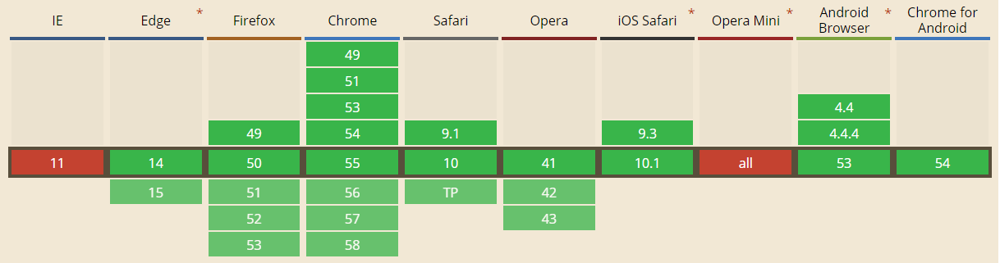

What's new in the Web
Tomek Wytrębowicz


Web Components
<template>- Shadow DOM
- Custom Elements
- HTML Imports
<template>
- W3C Recommendation
- Part of HTML 5.1
- Browser support:

Shadow DOM
- All browser vendors agreed
- .. on V1
Shadow DOM V1
What's New in Shadow DOM v1 (by examples) hayato.io/2016/shadowdomv1/ by Hayato Ito - spec editor, Chromium dev
| V0 | V1 |
|---|---|
|
|
|
|
|
Multiple shadow roots per element - not supported |
| Fallback content - not supported |
|
Shadow DOM V1
What's New in Shadow DOM v1 (by examples) hayato.io/2016/shadowdomv1/ by Hayato Ito - spec editor
| V0 | V1 |
|---|---|
|
|
|
Deprecated |
|
|
new methods and utilities: slot.assignedNodes(), Element.assignedSlot, Node.isConnected, Node.getRootNode(options)
|
Custom Elements
- All browser vendors agreed
- .. on V1 - again
Custom Elements v1
Reintroducing Custom Elements V1 webreflection.co.uk/blog/2016/08/21/custom-elements-v1 by Andrea Giammarchi - author of CEv1 polyfill
| V0 | V1 |
|---|---|
|
|
|
|
Custom Elements V1
| V0 | V1 |
|---|---|
|
Doing any DOM related changes in constructor are strongly discouraged!
|
|
|
|
observes only attributes declated in
|
Custom Elements is="v1"
is="v1"- Safari will not ship
in V1is - Other vendors will
- It's still in spec
- It's still in polyfill
HTML Imports
- Spec is on hold
- Polyfills are still supported
- Easy to polyfill
- W3C wants to provide such feature
- ... in cleaner form
- ... co-op with ES6 modules
Polymer 2.0
- Preview available
- Build on top of WebComponents v1
- Hybrid mode
- 1.7 is forward compat. w/ V1
- Data-binding is claimed to be fixed
-
Does not use
(is
)<dom-bind>
Migrations
- Polymer elements via:
1.7->Hybrid->2.0Hybrid should work with 1.7, 2.0, v0 and v1
- Vanilla elements
- Chrome runs v0 & v1
- Polyfilled CE - Andrea's
document-register-element
should make v0 & v1 run side by side - Polyfilled SD - ?
- SC will update WC.js@v1 & Polymer@2.0 only after all our elements will be ready
- ... it will be available at branch/flag/upgrade appl
Custom (CSS) Properites
Editor’s Draft, 13 December 2016
- CSS variables
- Styling Custom Elements
::part()
::part()idea in W3C WebPlatform WG
github.com/w3c/webcomponents/issues/300
- Custom pseudo-element selector
- SD (CE) exposing API for styling it's shadow children
<date-range-selector>
<!-- #shadow-root -->
<div id="container">
<input part="start-date" id="start-date" type="date">
</div>
<!-- /shadow-root -->
</date-range-selector>date-range-selector::part(start-date){
/* normal styles */
}Custom (HTML) Attributes
idea at W3C WebPlatform WG issues
- Addresses
isissue - Mixins for HTML Elements
class FooBarAttr {
attachedCallback() {
console.log('was created for first time');
}
changedCallback(newValue, oldValue) {
console.log('it changed');
}
}
customAttributes.define('foo-bar', FooBarAttr);
CSS Grid Layout
THE Way to create layouts
See my presenation from Meet.js Summit 2016
CSS Grid Layout
| W3C | ✓ | |
| ✓ | ||
| ✓ | ||
| ✓ | ||
| Safari TP | • | ⚑ behind the flag |
| • | Old spec supported for years. "High priority" for upgrade |
Thanks!
Tomek Wytrębowicz
tomalec
@tomalecpl
Specs:
Template (HTML5.1)- www.w3.org/TR/html51
Shadow DOM - w3c.github.io/webcomponents/spec/shadow/
Custom Elements - w3c.github.io/webcomponents/spec/custom/
HTML Imports - w3c.github.io/webcomponents/spec/imports/
Other:
is related issue at W3C - github.com/w3c/webcomponents/issues/509
This & other talks: